A hybrid enterprise built as a target, so detections have something real to catch.
Security engineering starts with an environment worth defending. This lab builds one: on-premises Active Directory and a hybrid Microsoft Entra ID tenant with the identity, access, and device controls a real company would run — Conditional Access, SSPR, Intune — instrumented so Defender and Sentinel have signal to work with. A Kali Linux attacker network sits alongside it, generating the telemetry that detection engineering and incident response are built and tested against.
Lab topology
Conditional Access / MFA
SSPR
Intune
Defender / Sentinel
AD DS + DNS — CORP.local
Group Policy
File server — departmental shares
NTFS + share permissions (RBAC)
10.10.10.20
10.10.10.10
Hyper-V infrastructure
Everything runs on Hyper-V on a Windows 11 Pro host — a target environment and an attack platform sharing the same virtualization layer, kept apart by network segmentation. Five VMs make up the environment: a domain controller, a file server, two Windows 11 workstations at different stages of hybrid configuration, and a Kali attack box confined to its own isolated virtual network.
FS01 — File server
WIN11-01 — Workstation
WIN11-02 — Workstation / test endpoint
KALI-01 — Attack / testing machine
10.10.10.0/24 — isolated attack network
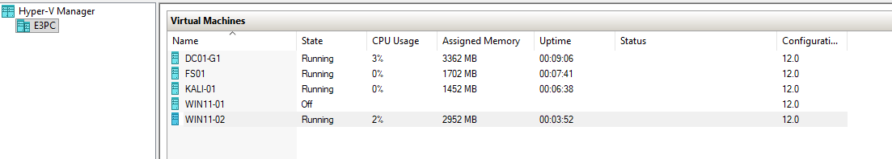
Active Directory — DC01
AD DS and DNS run on DC01 under the CORP.local domain. Rather than leaving
everything in the default containers, the domain has a proper OU structure with Users,
Groups, Computers, and Servers, populated with simulated employee and service accounts
across different departments and privilege levels — the same kind of privilege spread
that makes lateral movement and credential-abuse detections meaningful later on,
instead of testing against a flat, single-account domain.
John.Finance — Mike.Executive
Henry.Helpdesk — svcbackup
GG-Finance — GG-Executives
GG-Public
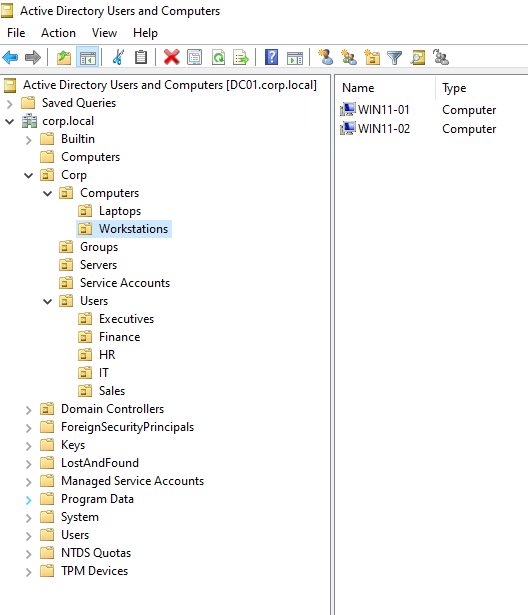
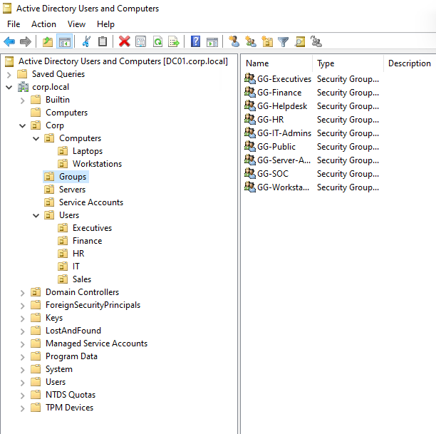
File server and role-based access
FS01 joined CORP.local and carries a dedicated 100 GB data disk mounted as
S:, hosting departmental shares. Share and NTFS permissions were configured
together against the AD security groups, then verified from an actual workstation
rather than assumed correct — Sarah's HR account can reach HR resources; accounts
outside the group can't. Correctly scoped RBAC is what makes an intrusion into one
account a contained event instead of full access to the file server — the boundary
a red-team exercise would try to walk around, and a blue-team investigation would
check first.
S:\Finance
S:\Executives
S:\IT
S:\Public
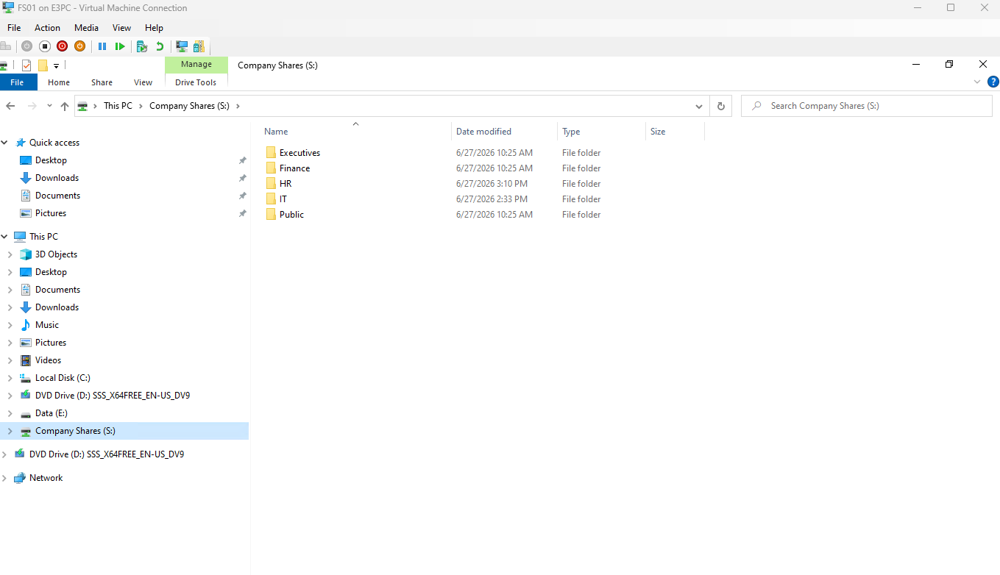
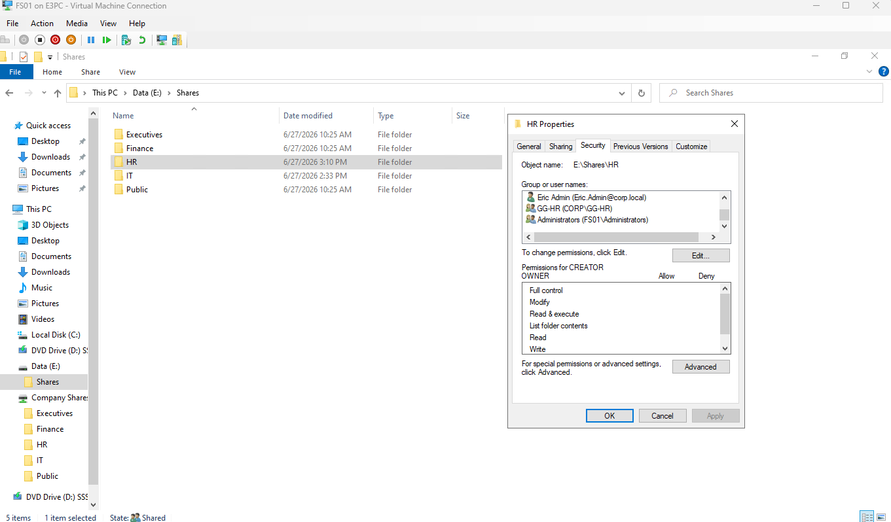
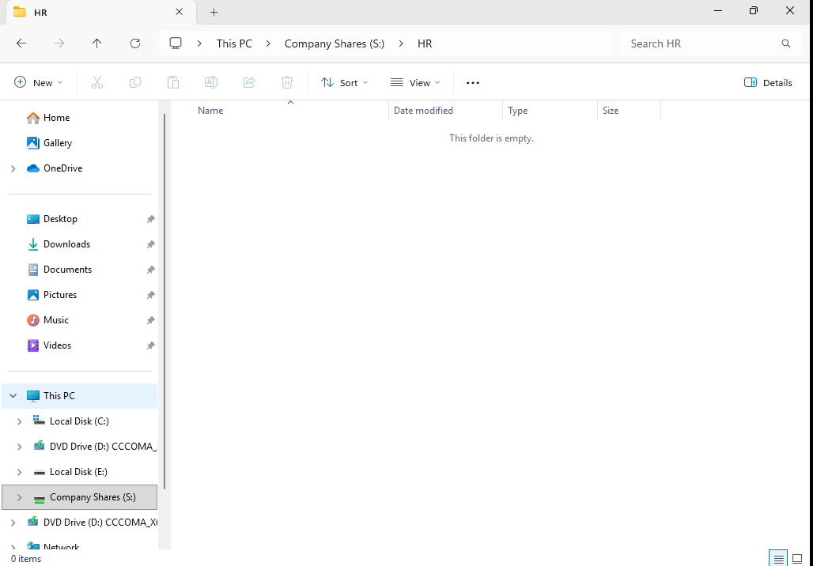
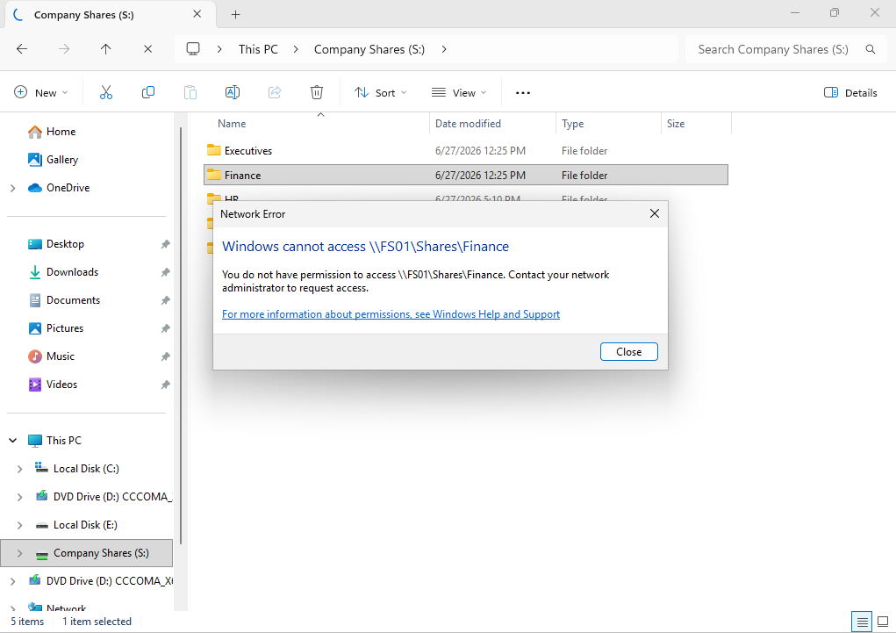
Group Policy
Centralized workstation configuration moved into Group Policy: a baseline GPO covering
hardening and endpoint restrictions, and — deliberately, for later detection work —
PowerShell logging, since script block and module logging are what turn a Kali-driven
PowerShell exercise into an investigable event instead of a silent one. Policy
application was verified with gpresult, including working through cases
where settings initially weren't applying as expected.
Default Domain Policy
from: DC01.corp.local
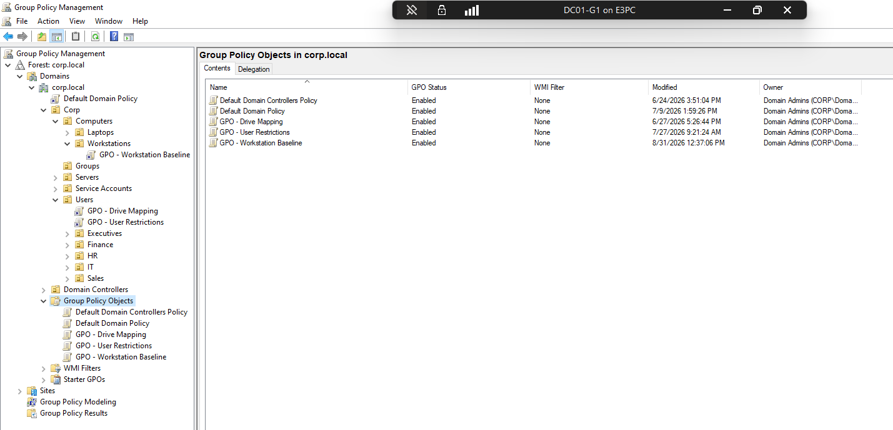
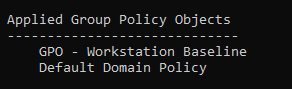
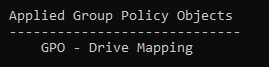
Microsoft 365 / Entra ID
The lab expanded from purely on-premises AD into a hybrid Microsoft identity environment, using a Microsoft 365 Business Premium tenant — because in most real intrusions today, identity is the perimeter attackers actually target. Cloud-side organization mirrors the same simulated company — departments, executive administrative units, security groups, and dedicated test identities — giving the access-control and sign-in work downstream something realistic to protect.
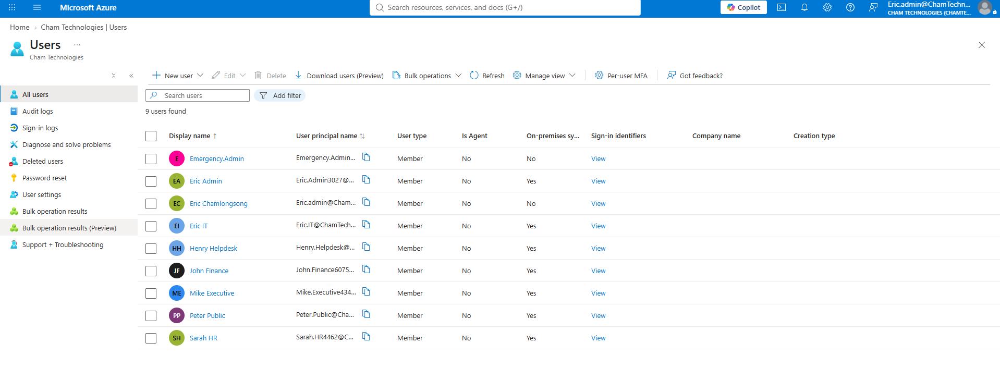
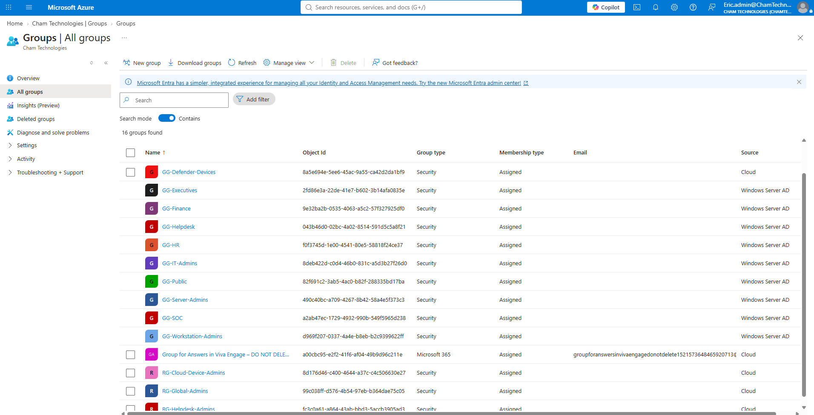
Entra Connect and hybrid identity
DC01 also runs Microsoft Entra Connect Sync, linking the on-premises AD to Entra ID with Password Hash Synchronization enabled and scoped OUs. This sync path is also a known attacker target in real hybrid environments, which makes understanding its normal behavior a prerequisite for spotting abuse of it later. One real issue surfaced during setup: the Computers OU wasn't included in the sync scope at first, so devices weren't appearing in Entra. Correcting the scope and re-running sync cycles fixed it.
↓
Entra Connect
↓
Microsoft Entra ID
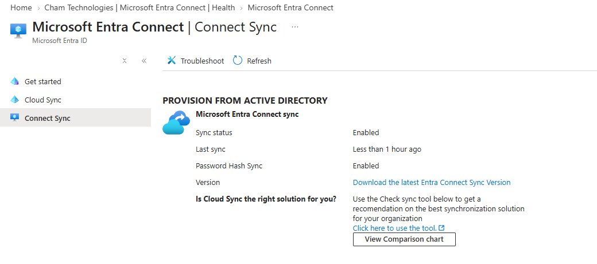
Hybrid Entra Join
With the Service Connection Point configured, endpoints register as both AD domain
joined and Entra registered — Hybrid Entra Joined. Confirmed on the workstation with
dsregcmd /status, and investigated Primary Refresh Token acquisition to
understand the practical difference between AD authentication, Entra identity, hybrid
join, and cloud SSO — rather than treating "hybrid identity" as one single feature.
PRTs are a real token-theft target in hybrid environments, so distinguishing normal
acquisition from something suspicious starts with knowing exactly what "normal" is.
AzureAdPrt : YES
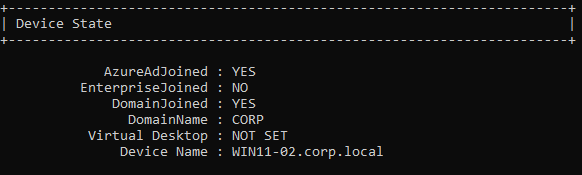
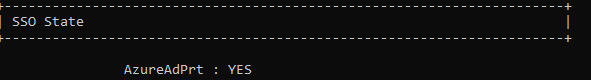
Conditional Access and MFA
Security Defaults were disabled to allow a custom Conditional Access configuration — the policy layer that actually blocks or challenges sign-ins based on risk, not just logs them. Policies requiring MFA were built for test groups and then actually exercised by logging into the accounts — including working through propagation delay before confirming enforcement — rather than trusting the policy configuration alone.
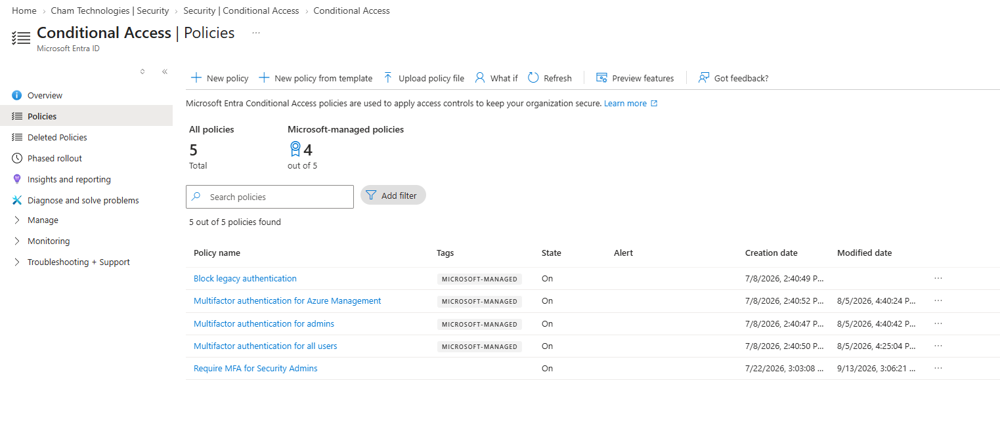
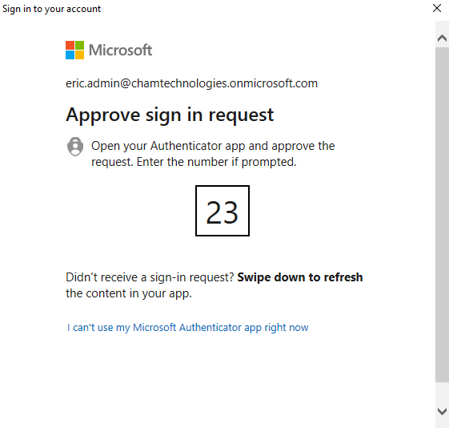
Self-service password reset and delegated admin
SSPR was configured requiring multiple authentication methods, since a single-factor reset flow is its own attack surface. Henry.Helpdesk was assigned the Helpdesk Administrator role — deliberately scoped rather than making every test account Global Administrator — reflecting the least-privilege principle that limits how far a compromised account can actually reach.
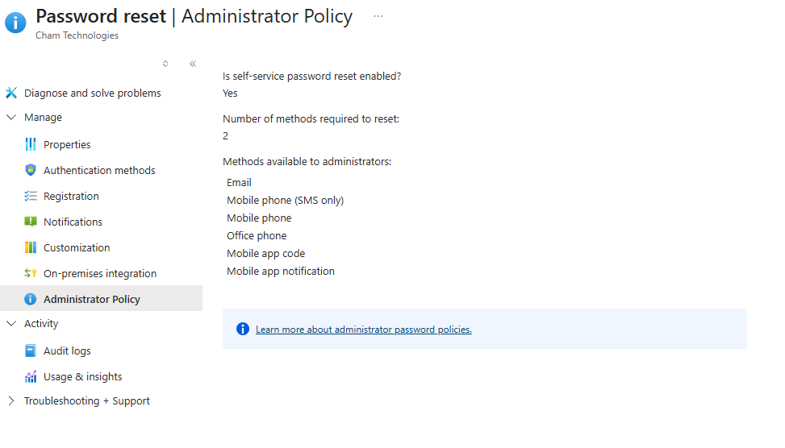
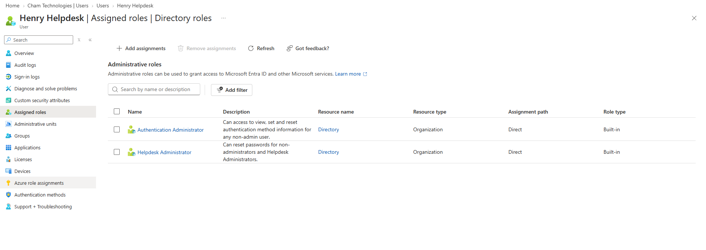
Intune device management
Automatic Intune enrollment introduced a distinction that's easy to gloss over on
paper but matters for incident response: a device existing in Entra is not the same
as a device actually being enrolled, managed, and reporting compliance to Intune —
and compliance state is often exactly what an analyst checks first when triaging an
alert from an endpoint. Work here covered enrollment scheduled tasks, licensing,
device and PRT state, OU sync scope, and troubleshooting sync errors such as
"AAD is busy" and SyncCycleInProgress. WIN11-02 was built partly to have
a clean endpoint to test against instead of continually repairing WIN11-01.
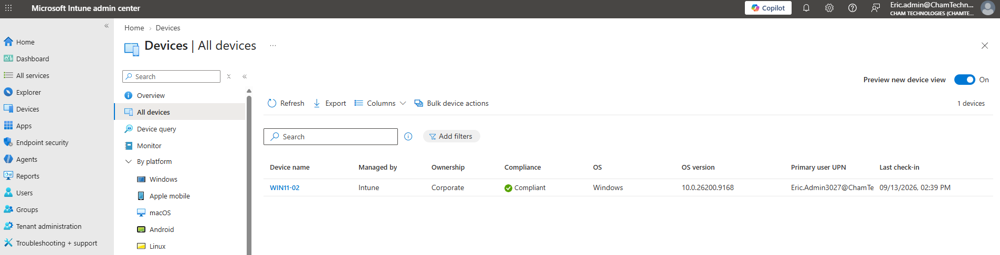
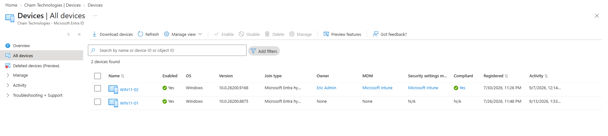
Detection engineering — Defender and Sentinel
This is the point of everything built before it: Microsoft Defender and Microsoft Sentinel are wired into Windows security event logs and Defender's own detection pipeline, so activity from the rest of the lab produces investigable telemetry instead of disappearing. Validation started at the signature and heuristic layer — an EICAR test file and a real HackTool (Mimikatz), both delivered from KALI-01 over HTTP rather than created locally, to exercise the download itself alongside the file. Both were caught on write: Mimikatz surfaced as a High-severity Credential Access alert, EICAR and a heuristic "Wacatac" detection landed as Informational, and Sentinel's own behavioral analytics separately fired twice on Process Execution Frequency Anomaly — confirmation that Sentinel's own detections engaged, not just Defender's antivirus engine.
From there the work moved into detection engineering proper: a brute-force
authentication attempt against a domain account from KALI-01, confirming the resulting
4625 failed-logon events in Windows Event Viewer, then tracing them into Sentinel's
SecurityEvent table via Advanced Hunting to confirm ingestion. The attempt
also tripped the domain's account lockout policy mid-test — a second, distinct signal
beyond the failed logons themselves. Opening the actual analytics rule meant to catch
this surfaced a real finding: it's a statistical anomaly rule built on an 8-day
historical baseline with a 50-event volume floor, so realistic manual test traffic
can't trigger it regardless of pattern — now driving a second, simpler threshold-based
rule built specifically to be validated with small, repeatable test batches.
'Wacatac' malware prevented — Informational
EICAR test file prevented — Informational
Process Execution Frequency Anomaly ×2 — Medium (Sentinel)
threshold = 0.333, countlimit = 50
→ needs real volume, not manual test batches
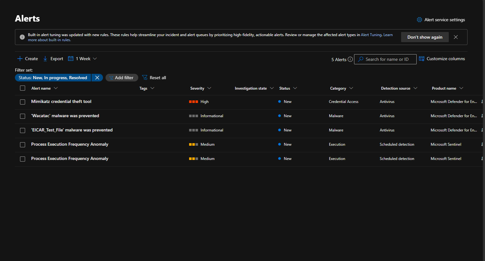
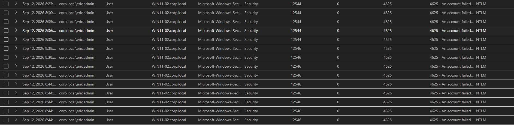
Red team engine — KALI-01
Detections are only as good as what they're tested against, which is what KALI-01 is
for. Rather than generating only benign Windows activity and hoping the analytics rules
would generalize, KALI-01 runs real offensive techniques against the domain, each one
mapped to a MITRE ATT&CK technique and designed around a specific detection it's
meant to trip: a Python HTTP server and a PowerShell download cradle
(Invoke-WebRequest) to pull test payloads onto WIN11-02 — exercising
ingress tool transfer (T1105) alongside file-signature detection — and an SMB-based
credential brute-force with CrackMapExec against a domain account (T1110), scoped to
corp.local with a small targeted wordlist after an initial nmap
check confirmed 139/445 open and a first full-dictionary run revealed the domain's
five-attempt lockout threshold.
Worth noting as its own finding: CrackMapExec itself errored out mid-run with repeated NETBIOS connection timeouts, while WIN11-02 had already logged the failed authentications and locked the account server-side. The attack tool's own client-side noise isn't the same as what actually happened on the wire — Event Viewer and Sentinel are the ground truth, not the terminal running the attack.
WIN11-02 → 10.10.10.20
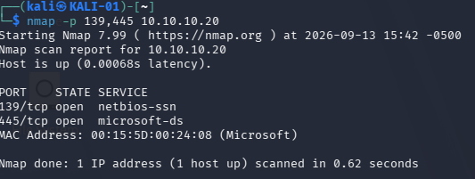
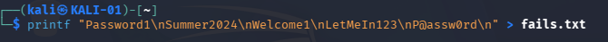
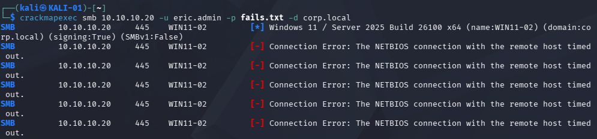